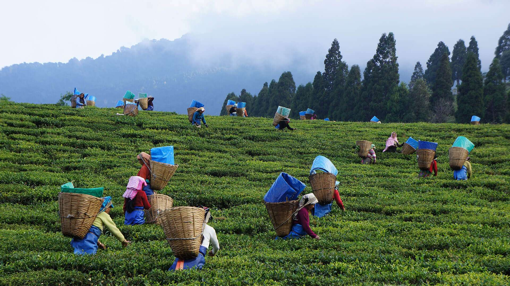
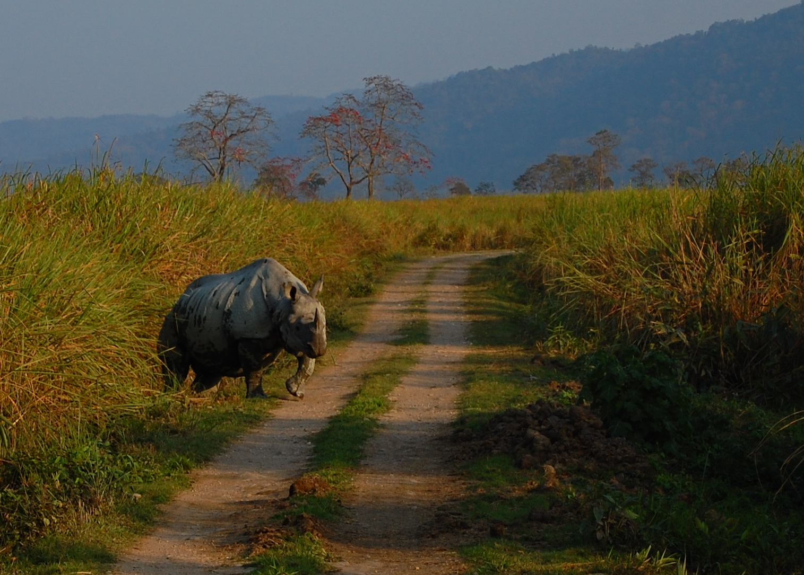
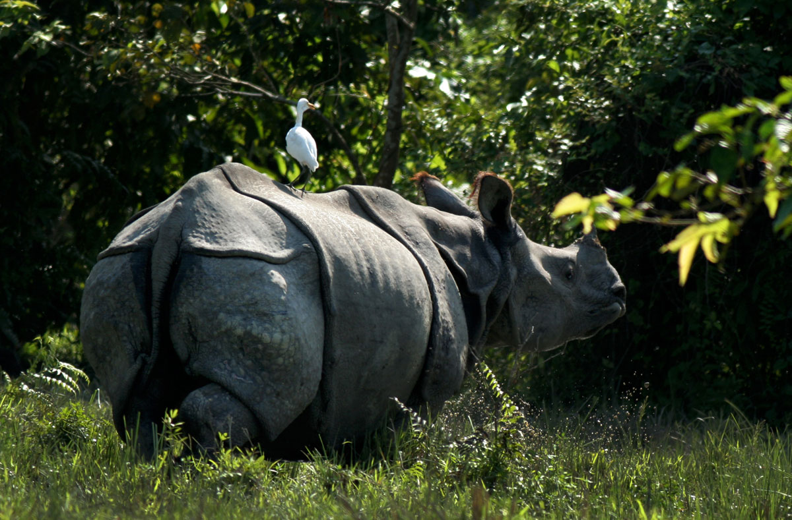
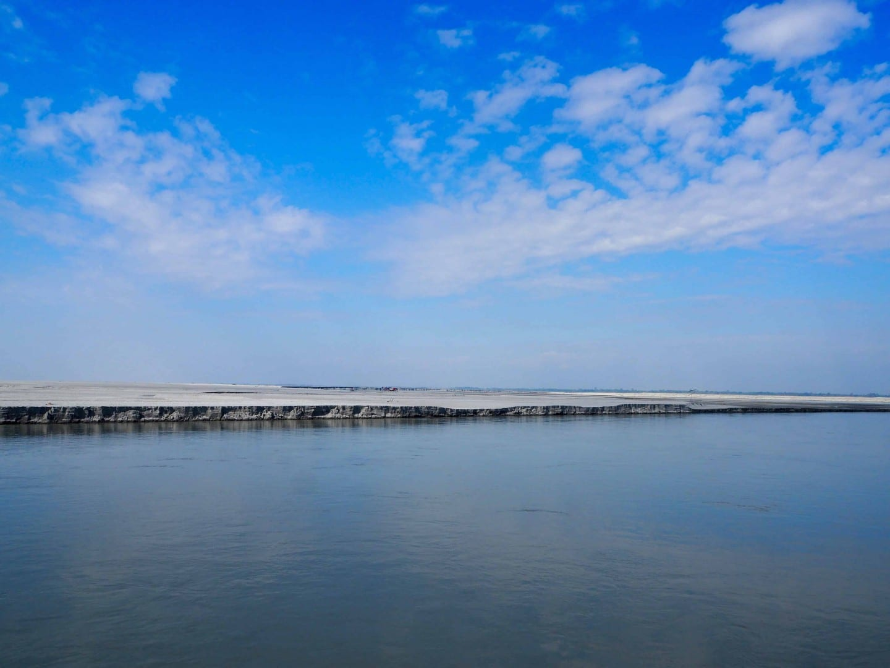
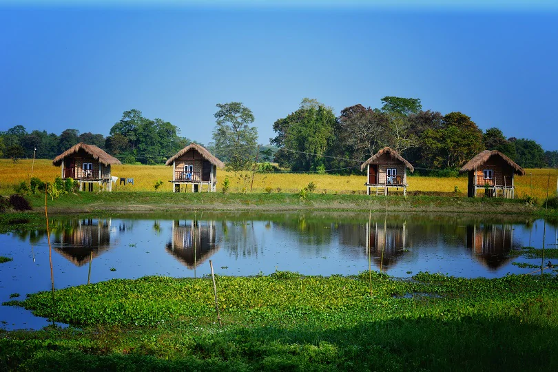

ASSAM
ASSAM TEA GARDENS

Welcome to the verdant paradise of Assam, renowned worldwide for its sprawling tea gardens that
carpet the landscape in a lush sea of green. Nestled in the heart of northeastern India, Assam
boasts a tea culture steeped in rich history, captivating landscapes, and unparalleled flavors.
The journey into Assam's tea gardens is a sensory delight, where the air is infused with the
intoxicating aroma of freshly plucked leaves and the gentle rustle of tea bushes swaying in the
breeze. As you traverse the undulating terrain, you'll be mesmerized by the endless expanse of
emerald tea estates that stretch as far as the eye can see, painting a picture of serene beauty
against the backdrop of rolling hills and mist-shrouded valleys.
Step into the world of tea cultivation as you explore the sprawling estates, where skilled workers
meticulously handpick the tender tea leaves that will eventually find their way into your cup. Gain
insight into the intricate process of tea production, from withering and rolling to oxidation and
drying, as you witness the age-old techniques that have been passed down through generations.

Immerse yourself in the vibrant culture of Assam's tea gardens as you interact with the warm and
hospitable tea workers, whose dedication and expertise are the backbone of the region's thriving tea
industry. Share stories over a steaming cup of Assam's famous brew, renowned for its robust flavor
and invigorating aroma, and discover the art of tea tasting at traditional tea bungalows nestled
amidst the verdant gardens.
For those seeking a deeper immersion into Assam's tea heritage, a visit to the charming town of
Jorhat, known as the "Tea Capital of India," offers a gateway to explore historic tea estates and
experience the colonial-era charm of tea bungalows and planters' mansions.
Whether you're a tea aficionado, nature enthusiast, or simply seeking a tranquil retreat amidst
breathtaking scenery, the tea gardens of Assam promise an unforgettable journey into the heart of
India's tea culture. Come, lose yourself in the enchanting beauty and timeless traditions of Assam's
tea gardens, and let the spirit of this magical land infuse your soul with warmth and rejuvenation.
KAZIRANGA NATIONAL PARK
Welcome to Kaziranga National Park, a UNESCO World Heritage Site and a true wildlife enthusiast's
paradise nestled in the heart of Assam, India. Spread across the floodplains of the mighty
Brahmaputra River, Kaziranga is a haven for biodiversity, home to the iconic one-horned rhinoceros
and a plethora of other fascinating species.
As you venture into the depths of Kaziranga, you'll be greeted by a mosaic of diverse ecosystems,
including lush grasslands, dense forests, and marshy wetlands, each teeming with life. Embark on an
exhilarating safari adventure through the park's vast expanse, where you'll have the chance to
encounter a stunning array of wildlife in their natural habitat.
Keep your eyes peeled for the majestic one-horned rhinoceros, whose imposing presence dominates the
landscape, alongside other iconic inhabitants such as Asian elephants, wild water buffalo, and
elusive Royal Bengal tigers. Birdwatchers will be enthralled by the park's avian diversity, with
over 500 species including the rare greater adjutant stork, vibrant kingfishers, and majestic birds
of prey soaring overhead.


Beyond its remarkable wildlife, Kaziranga is also a testament to conservation success, with
dedicated efforts to protect and preserve its precious ecosystems. Explore the park's conservation
centers and learn about ongoing initiatives to safeguard endangered species and promote sustainable
coexistence between wildlife and local communities.
For a deeper immersion into Kaziranga's natural wonders, embark on a guided nature walk or elephant
safari, allowing you to traverse off-the-beaten-path trails and gain intimate insights into the
park's intricate web of life. And as the sun sets over the horizon, experience the magic of
Kaziranga by twilight, when the sounds of the jungle come alive with the symphony of nocturnal
creatures.
Whether you're a wildlife enthusiast, nature lover, or simply seeking an adventure amidst
breathtaking scenery, Kaziranga National Park offers an unforgettable journey into the heart of
Assam's wilderness. Come, explore the wonders of this extraordinary sanctuary, where every moment
brings you closer to the untamed beauty of the natural world.
MAJULI
Welcome to Majuli, the world's largest river island, nestled in the midst of the mighty Brahmaputra
River in the northeastern state of Assam, India. Majuli is a unique and enchanting destination,
renowned for its serene beauty, vibrant culture, and spiritual heritage, offering visitors a
tranquil retreat amidst breathtaking natural landscapes.
As you set foot on Majuli's verdant shores, you'll be captivated by the island's picturesque vistas
of lush greenery, swaying palms, and meandering waterways, creating a paradise-like setting that
feels worlds away from the hustle and bustle of modern life. Majuli's pristine beauty is a testament
to its status as a haven for biodiversity, home to a diverse array of flora and fauna that thrive in
its fertile soil and tranquil environs.
Majuli is not just a feast for the eyes but also a melting pot of culture and tradition, with a rich
heritage that dates back centuries. Explore the island's charming villages, where time seems to
stand still amidst traditional bamboo and thatch-roofed houses, and immerse yourself in the warm
hospitality of the Mishing and Deori communities, who call Majuli home.


At the heart of Majuli's cultural tapestry are its ancient Vaishnavite monasteries, or satras,
which serve as centers of Assamese arts, music, and dance. Visit the historic Kamalabari Satra,
Auniati Satra, and Dakhinpat Satra, where you can witness age-old rituals, vibrant dance
performances, and intricate craft demonstrations, offering a glimpse into the island's spiritual and
artistic heritage.
For nature enthusiasts, Majuli offers a plethora of outdoor activities amidst its pristine
landscapes. Embark on leisurely bicycle rides through scenic countryside trails, paddle along
tranquil waterways in traditional bamboo boats, or simply unwind on sun-kissed riverbanks as you
soak in the serene ambiance of this idyllic island retreat.
Majuli's allure lies not only in its natural beauty and cultural heritage but also in its sense of
tranquility and spiritual rejuvenation. Whether you're seeking adventure, cultural immersion, or
simply a peaceful escape from the chaos of everyday life, Majuli beckons with open arms, inviting
you to discover the timeless charm and unparalleled beauty of India's river island paradise.